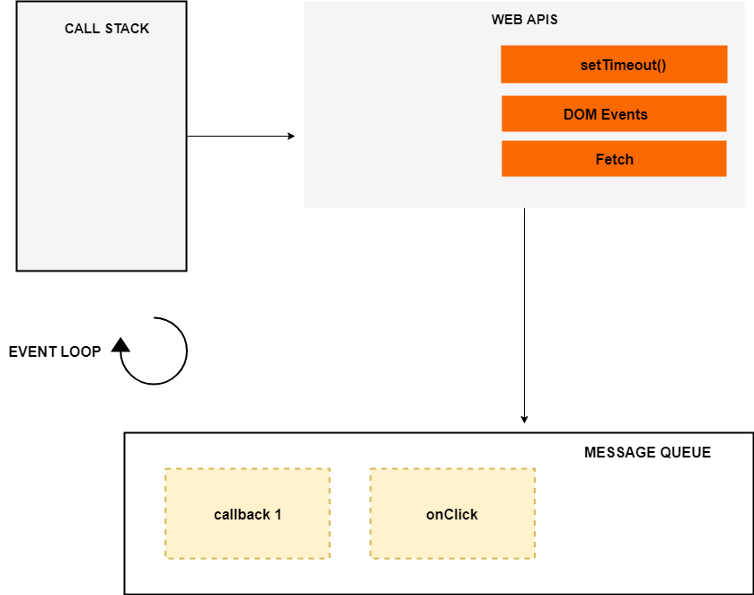

<!DOCTYPE html>
<html lang="en-us">
  <head>
     <meta charset="UTF-8">
<meta name="viewport" content="width=device-width, initial-scale=1">
<meta http-equiv="X-UA-Compatible" content="IE=edge">
<meta name="generator" content="Hugo 0.83.1 with theme Tranquilpeak 0.4.8-BETA">
<meta name="author" content="Đặng Tuấn Dương">
<meta name="keywords" content="javascript, call stack, event loop, callback queue, asynchronous, single thread">
<meta name="description" content="JS là 1 ngôn ngữ đơn luồng (Single-thread), tức là tại 1 thời điểm chỉ có duy nhất 1 dòng lệnh được thực hiện. Vậy tại sao chỉ với 1 thread, mà JS vẫn có thể xử lí nhiều tác vụ cùng lúc đến vậy?">


<meta property="og:description" content="JS là 1 ngôn ngữ đơn luồng (Single-thread), tức là tại 1 thời điểm chỉ có duy nhất 1 dòng lệnh được thực hiện. Vậy tại sao chỉ với 1 thread, mà JS vẫn có thể xử lí nhiều tác vụ cùng lúc đến vậy?">
<meta property="og:type" content="article">
<meta property="og:title" content="JS Concept: Call Stack, Event Loop (P6)">
<meta name="twitter:title" content="JS Concept: Call Stack, Event Loop (P6)">
<meta property="og:url" content="/2021/04/js-concept-call-stack-event-loop-p6/">
<meta property="twitter:url" content="/2021/04/js-concept-call-stack-event-loop-p6/">
<meta property="og:site_name" content="duongdt&#39;s blog">
<meta property="og:description" content="JS là 1 ngôn ngữ đơn luồng (Single-thread), tức là tại 1 thời điểm chỉ có duy nhất 1 dòng lệnh được thực hiện. Vậy tại sao chỉ với 1 thread, mà JS vẫn có thể xử lí nhiều tác vụ cùng lúc đến vậy?">
<meta name="twitter:description" content="JS là 1 ngôn ngữ đơn luồng (Single-thread), tức là tại 1 thời điểm chỉ có duy nhất 1 dòng lệnh được thực hiện. Vậy tại sao chỉ với 1 thread, mà JS vẫn có thể xử lí nhiều tác vụ cùng lúc đến vậy?">
<meta property="og:locale" content="vi">

  
    <meta property="article:published_time" content="2021-04-11T00:00:00">
  
  
    <meta property="article:modified_time" content="2021-04-11T00:00:00">
  
  
  
  
    
      <meta property="article:tag" content="javascript">
    
  


<meta name="twitter:card" content="summary">


  <meta property="og:image" content="/images/avatar.jpeg">
  <meta property="twitter:image" content="/images/avatar.jpeg">


    <title>JS Concept: Call Stack, Event Loop (P6)</title>

    <link
      rel="icon"
      href="/images/avatar.jpeg"
    />
     

    <link rel="canonical" href="/2021/04/js-concept-call-stack-event-loop-p6/" />

    <link
      rel="stylesheet"
      href="https://cdnjs.cloudflare.com/ajax/libs/highlight.js/11.2.0/styles/default.min.css"
    />
    <script src="https://cdnjs.cloudflare.com/ajax/libs/highlight.js/11.2.0/highlight.min.js"></script>
    
    <script src="https://cdnjs.cloudflare.com/ajax/libs/highlight.js/11.2.0/highlight.min.js"></script>
    <script src="https://cdnjs.cloudflare.com/ajax/libs/highlight.js/11.2.0/languages/javascript.min.js"></script>

    
    <link
      rel="stylesheet"
      href="https://cdnjs.cloudflare.com/ajax/libs/font-awesome/4.7.0/css/font-awesome.min.css"
      integrity="sha256-eZrrJcwDc/3uDhsdt61sL2oOBY362qM3lon1gyExkL0="
      crossorigin="anonymous"
    />
    <link
      rel="stylesheet"
      href="https://cdnjs.cloudflare.com/ajax/libs/fancybox/2.1.4/jquery.fancybox.min.css"
      integrity="sha256-vuXZ9LGmmwtjqFX1F+EKin1ThZMub58gKULUyf0qECk="
      crossorigin="anonymous"
    />
    <link
      rel="stylesheet"
      href="https://cdnjs.cloudflare.com/ajax/libs/fancybox/2.1.4/helpers/jquery.fancybox-thumbs.min.css"
      integrity="sha256-SEa4XYAHihTcEP1f5gARTB2K26Uk8PsndQYHQC1f4jU="
      crossorigin="anonymous"
    />
    
    
    <link
      rel="stylesheet"
      href="/css/style-twzjdbqhmnnacqs0pwwdzcdbt8yhv8giawvjqjmyfoqnvazl0dalmnhdkvp7.min.css"
    />
    
        <script>
  hljs.highlightAll()
</script>

  </head>
</html>

  <body>
    <div id="blog">
      <header id="header" data-behavior="2">
  <i id="btn-open-sidebar" class="fa fa-lg fa-bars"></i>
  <div class="header-title">
    <a class="header-title-link" href="/">duongdt&#39;s blog</a>
  </div>
  
</header>

      <nav id="sidebar" data-behavior="2">
  <div class="sidebar-container">
    
      <div class="sidebar-profile">
        <a href="/#about">
          
        </a>
        <h4 class="sidebar-profile-name">Đặng Tuấn Dương</h4>
        
          <h5 class="sidebar-profile-bio"><a href="mailto:duongdt0291@gmail.com">duongdt0291@gmail.com</a></h5>
        
      </div>
    
    <ul class="sidebar-buttons">
      
  <li class="sidebar-button">
    
      <a class="sidebar-button-link " href="/posts">
    
      <i class="sidebar-button-icon fa fa-lg fa-home"></i>
      
      <span class="sidebar-button-desc">Trang chủ</span>
    </a>
  </li>

  <li class="sidebar-button">
    
      <a class="sidebar-button-link " href="/tags">
    
      <i class="sidebar-button-icon fa fa-lg fa-tags"></i>
      
      <span class="sidebar-button-desc">Thẻ thông tin</span>
    </a>
  </li>

  <li class="sidebar-button">
    
      <a class="sidebar-button-link " href="/#about">
    
      <i class="sidebar-button-icon fa fa-lg fa-user-circle"></i>
      
      <span class="sidebar-button-desc">Thông tin</span>
    </a>
  </li>


    </ul>
    <ul class="sidebar-buttons">
      

    </ul>
    <ul class="sidebar-buttons">
      

    </ul>
  </div>
</nav>

      

      <div id="main" data-behavior="2"
        class="
               hasCoverMetaIn
               ">
        <article class="post" itemscope itemType="http://schema.org/BlogPosting">
          
          
            <div class="post-header main-content-wrap text-left">
  
    <h1 class="post-title" itemprop="headline">
      JS Concept: Call Stack, Event Loop (P6)
    </h1>
  
  
  <div class="postShorten-meta post-meta">
    
      <time itemprop="datePublished" datetime="2021-04-11T00:00:00Z">
        
  
  
  
  
    11 tháng 4 2021
  

      </time>
    
    
  </div>

</div>
          
          <div class="post-content markdown" itemprop="articleBody">
            <div class="main-content-wrap">
              <p>JS là 1 ngôn ngữ đơn luồng (<strong>Single-thread</strong>), tức là tại 1 thời điểm chỉ có duy nhất 1 dòng lệnh được thực hiện. Vậy tại sao chỉ với 1 thread, mà JS vẫn có thể xử lí nhiều tác vụ cùng lúc đến vậy?</p>
<p>Khi lướt web, chúng ta vẫn có thể vừa gọi api để lấy kết quả từ server, vừa xem video, vừa thao tác đủ thứ trên cùng 1 trang web mà không bị dừng lại gì, trong khi nếu như theo lý thuyết, thì nếu đang gọi api, chúng ta không thể thực hiện được việc gì khác.</p>
<p>Để giải quyết câu hỏi này, hôm nay chúng ta sẽ cùng tìm hiểu về các khái niệm như Call Stack, Event Loop, Callback Queue. Việc hiểu được những khái niệm này theo mình là rất quan trọng với mọi lập trình viên muốn theo đuổi JS. Việc hiểu được JS xử lí như thế nào, sẽ giúp chúng ta viết code được tối ưu hơn, cũng như kiểm soát được thứ tự thực hiện code tốt hơn.</p>
<p>Đầu tiên chúng ta cùng xem hình bên dưới:</p>
<p></p>
<p>Hình chữ nhật có viền bên trái là 1 mô hình đơn giản của JS Engine.</p>
<p>JS Engine gồm 2 thành phần chính:</p>
<ul>
<li>Vùng nhớ heap (memory heap): khu vực cấp phát bộ nhớ</li>
<li>Ngăn xếp (call stack): đây là nơi chứa các khung stack khi bạn thực thi code. Stack này theo cấu trúc LIFO (last in, first out), tức là cái gì cho vào sau sẽ được đẩy ra trước. Do JS là ngôn ngữ single thread, do vậy nó cũng chỉ có 1 thread duy nhất.</li>
</ul>
<p>Cùng vào 1 ví dụ chỉ có code đồng bộ để xem Call Stack hoạt động thế nào nhé.</p>
<div class="highlight"><pre style="color:#f8f8f2;background-color:#272822;-moz-tab-size:4;-o-tab-size:4;tab-size:4"><code class="language-jsx" data-lang="jsx"><span style="color:#66d9ef">const</span> <span style="color:#a6e22e">second</span> <span style="color:#f92672">=</span> () =&gt; {
  <span style="color:#a6e22e">console</span>.<span style="color:#a6e22e">log</span>(<span style="color:#e6db74">&#39;Hello there!&#39;</span>)
}
<span style="color:#66d9ef">const</span> <span style="color:#a6e22e">first</span> <span style="color:#f92672">=</span> () =&gt; {
  <span style="color:#a6e22e">console</span>.<span style="color:#a6e22e">log</span>(<span style="color:#e6db74">&#39;Hi there!&#39;</span>)
  <span style="color:#a6e22e">second</span>()
  <span style="color:#a6e22e">console</span>.<span style="color:#a6e22e">log</span>(<span style="color:#e6db74">&#39;The End&#39;</span>)
}
<span style="color:#a6e22e">first</span>()
</code></pre></div><p>Khi đoạn code trên được chạy thì code sẽ được đẩy vào call stack và thực hiện như sau:</p>
<p></p>
<p>Nếu ai đã đọc <a href="https://duongdt0291.github.io/2021/01/js-concept-execution-context-hoisting-scope-and-closure-p1/">phần 1 trong series này của mình về execution context</a> của mình, thì thấy cái call stack này rất quen phải không nào. Ai chưa đọc thì mình khuyến khích đọc qua nhé. Bản chất call stack chính là nơi lưu trữ các execution context thôi.</p>
<p>Các bước JS engine thực thi đoạn code trên như sau:</p>
<ol>
<li>Khi đoạn code được chạy, hàm <strong>main</strong> được gọi, có thể hiểu là <strong>global execution context</strong> khởi tạo, đẩy vào stack.</li>
<li>Trong <strong>main,</strong> hàm <strong>first</strong> được gọi và đẩy vào stack.</li>
<li>Trong hàm <strong>first</strong>, <strong>console.log(&lsquo;Hi there!')</strong> được gọi, đẩy vào stack, in ra màn hình dòng chữ &ldquo;Hi there!&rdquo; và được đẩy khỏi stack ( rất rõ ràng là LIFO đúng không, vào sau nhưng lại xong luôn và ra trước).</li>
<li>Tiếp theo, vẫn trong hàm <strong>first</strong>, hàm <strong>second</strong> được gọi và đẩy vào stack.</li>
<li>Trong hàm <strong>second</strong>, <strong>console.log(&lsquo;Hello there!')</strong> được gọi, đẩy vào stack, in ra màn hình &ldquo;Hello there&rdquo;, sau đó <strong>console.log</strong> được đẩy khỏi stack.</li>
<li>Hàm <strong>second</strong> thực hiện xong và được xóa khỏi stack, JS engine chạy dòng console.log tiếp theo trong <strong>first,</strong> đẩy console.log vào stack, in ra màn hình &ldquo;The End!&rdquo;, đẩy ra khỏi stack.</li>
<li>Đến đây thì hàm first thực hiện xong và được JS engine đẩy khỏi stack, hàm main cũng không còn gì để chạy, được đẩy ra nốt, và lúc này call stack đã trống, JS engine không còn gì để thực hiện.</li>
</ol>
<p>Có thể thấy rằng, mỗi khi 1 function chạy xong, nó mới được đẩy khỏi call stack, và các function phía trước mới tiếp tục được chạy. Vậy giả sử có 1 function gọi API lên server, hoặc đọc file rất nặng, mất mấy giây mới có kết quả, thì JS xử lí thế nào để nó vẫn có thể thực hiện tiếp những công việc khác mà không phải chờ kết quả trả về?</p>
<p>JS Engine chỉ có 1 thread thôi, nó tự biết là không đủ sức xử lí nhiều tác vụ nặng đến vậy, nên rất thông mình, lanh lợi, có gì khó hoặc nặng là nó nhờ môi trường thực thi (runtime environment) nơi nó đang chạy để xử lí. Môi trường thực thi xử lí xong sẽ trả về kết quả cho nó.</p>
<p></p>
<p>Ở hình trên, có thể thấy ngoài Call stack, chúng ta còn có các thành phần khác là <strong>Web apis</strong>, <strong>Event loop</strong>, <strong>Message queue</strong> (hay còn được gọi là <strong>Callback queu</strong>e). Đây là những thành phần mà môi trường browser cung cấp để JS engine có thể đẩy ra các tác vụ tốn thời gian, như call API, setTimeout, &hellip; Ở môi trường server, mà cụ thể là Nodejs, cũng có cơ chế tương tự, thay vì Web apis, Nodejs sẽ cung cấp 1 thread pool (mặc định là 4 thread) để xử lí các tác vụ nặng, đảm bảo giữ cho main thread (Call Stack) không bị đứng lại do phải chờ kết quả của tác vụ nào đấy.</p>
<p>Ví dụ:</p>
<div class="highlight"><pre style="color:#f8f8f2;background-color:#272822;-moz-tab-size:4;-o-tab-size:4;tab-size:4"><code class="language-jsx" data-lang="jsx"><span style="color:#66d9ef">const</span> <span style="color:#a6e22e">networkRequest</span> <span style="color:#f92672">=</span> () =&gt; {
  <span style="color:#a6e22e">setTimeout</span>(() =&gt; {
    <span style="color:#a6e22e">console</span>.<span style="color:#a6e22e">log</span>(<span style="color:#e6db74">&#39;Async Code&#39;</span>)
  }, <span style="color:#ae81ff">2000</span>)
}
<span style="color:#a6e22e">console</span>.<span style="color:#a6e22e">log</span>(<span style="color:#e6db74">&#39;Hello World&#39;</span>)
<span style="color:#a6e22e">networkRequest</span>()
<span style="color:#a6e22e">console</span>.<span style="color:#a6e22e">log</span>(<span style="color:#e6db74">&#39;The End&#39;</span>)
</code></pre></div><p></p>
<p>Các bước chạy code, đẩy vào stack thực thi, đẩy ra khỏi stack, nó cũng tương tự ở ví dụ trước đó, nên mình sẽ không viết lại, mọi người chỉ cần chú ý ở hình trên, khi hàm setTimeout được đẩy vào stack. Do đây là 1 tác vụ bất đồng bộ, phải chờ sau ít nhất 2 giây, hàm được khai báo (mình sẽ gọi là hàm <strong>callback</strong> nhé) khi gọi <strong>setTimeout</strong> mới được chạy. JS engine lúc này sẽ đẩy việc chờ này cho Web Apis. Sau 2s, Web apis sẽ đẩy hàm <strong>callback</strong> vào <strong>Callback queue</strong>. Tiếp theo là nhiệm vụ của <strong>Event Loop</strong>: theo dõi Call Stack và Callback Queue (hàng đợi các hàm callback). Nếu Call Stack đang trống, nó sẽ lấy event đầu tiên từ trong hàng đợi ra và đẩy vào trong Call Stack - tức là thực thi nó.</p>
<p>Ở ví dụ trên, chỉ sau khi console.log(&lsquo;The End&rsquo;) được thực hiện thì call stack đã trống. Lúc này event loop sẽ đẩy hàm <strong>callback</strong> vào stack, thực thi và in ra dòng chữ &ldquo;Async Code&rdquo;. Các bạn có thể thử và sẽ thấy đoạn code trên in ra kết quả như sau:</p>
<div class="highlight"><pre style="color:#f8f8f2;background-color:#272822;-moz-tab-size:4;-o-tab-size:4;tab-size:4"><code class="language-jsx" data-lang="jsx"><span style="color:#a6e22e">Hello</span> <span style="color:#a6e22e">World</span>
<span style="color:#a6e22e">The</span> <span style="color:#a6e22e">End</span>
<span style="color:#a6e22e">Async</span> <span style="color:#a6e22e">Code</span>
</code></pre></div><p>Nếu Callback Queue có nhiều phần tử, Event loop sẽ đợi phần tử vừa đẩy vào thực thi xong, sau đó mới đẩy phần tử tiếp theo vào stack.</p>
<p>Như vậy, nhờ các thành phần như Event loop, Web Apis, Callback queue, nói chung là các thành phần mà môi trường thực thi cung cấp, JS có thể thực hiện đa tác vụ, mặc dù nó là ngôn ngữ đơn luồng, hay có thể hiểu là chỉ sử dụng 1 single thread cho call stack.</p>
<p>Qua bài viết này, mình hi vọng mọi người có 1 cái nhìn rõ ràng hơn về cơ chế xử lí đa tác vụ của JS. Trong bài tới, mình sẽ nói rõ hơn về callback, promise, async/await. Mọi người nhớ theo dõi nhé.</p>
<p><strong><em>Bonus</em></strong>: StackOverflow là 1 trang web mà mọi lập trình viên đều biết đến. Và đây cũng là 1 khái niệm, 1 lỗi mà lập trình viên cũng dễ gặp phải. Callstack thực ra cũng có giới hạn về bộ nhớ, và khi vượt quá bộ nhớ được cấp, nó sẽ xảy ra trạng thái stack overflow và khiến cho chương trình bị crash, hoặc hiện ra thông báo lỗi. Việc này thường gặp khi xử lí các hàm đệ quy.</p>
<p></p>
<p>Tham khảo:</p>
<ul>
<li><a href="https://blog.bitsrc.io/understanding-asynchronous-javascript-the-event-loop-74cd408419ff">https://blog.bitsrc.io/understanding-asynchronous-javascript-the-event-loop-74cd408419ff</a></li>
<li><a href="https://kipalog.com/posts/Duc-khoet-Javascript--Phan-1---Khai-quat-ve-engine--runtime-va-callstack">https://kipalog.com/posts/Duc-khoet-Javascript&ndash;Phan-1&mdash;Khai-quat-ve-engine&ndash;runtime-va-callstack</a></li>
<li><a href="https://kipalog.com/posts/Duc-khoet-Javascript--Phan-4---Event-loop--lap-trinh-bat-dong-bo---5-meo-cai-thien-Async-Await">https://kipalog.com/posts/Duc-khoet-Javascript&ndash;Phan-4&mdash;Event-loop&ndash;lap-trinh-bat-dong-bo&mdash;5-meo-cai-thien-Async-Await</a></li>
<li><a href="https://stackoverflow.com/questions/34855352/how-in-general-does-node-js-handle-10-000-concurrent-requests">https://stackoverflow.com/questions/34855352/how-in-general-does-node-js-handle-10-000-concurrent-requests</a></li>
<li><a href="https://flaviocopes.com/javascript-event-loop/">https://flaviocopes.com/javascript-event-loop/</a></li>
<li><a href="https://www.youtube.com/watch?v=8aGhZQkoFbQ&amp;t=640s">https://www.youtube.com/watch?v=8aGhZQkoFbQ&amp;t=640s</a></li>
</ul>

              
            </div>
          </div>
          <div id="post-footer" class="post-footer main-content-wrap">
            
              
                
                
                  <div class="post-footer-tags">
                    <span class="text-color-light text-small">THẺ ĐÁNH DẤU</span><br/>
                    
<a
  class="tag tag--primary tag--small"
  href="/tags/javascript/"
  >javascript</a
>


                  </div>
                
              
            
            <script
  src="https://utteranc.es/client.js"
  repo="duongdt0291/duongdt0291.github.io"
  issue-term="pathname"
  theme="github-light"
  label="Comment"
  crossorigin="anonymous"
  async
></script>

            <div class="post-actions-wrap">
  
      <nav >
        <ul class="post-actions post-action-nav">
          
            <li class="post-action">
              
                <a class="post-action-btn btn btn--default tooltip--top" href="/2021/03/git-101-th%C6%B0-m%E1%BB%A5c-.git-p5/" data-tooltip="Git 101: Thư mục .git (P5)">
              
                  <i class="fa fa-angle-left"></i>
                  <span class="hide-xs hide-sm text-small icon-ml">Trước</span>
                </a>
            </li>
            <li class="post-action">
              
                <a class="post-action-btn btn btn--default tooltip--top" href="/2021/04/js-concept-callback-promise-async/await-p7/" data-tooltip="JS Concept: Callback, Promise &amp; Async/await (P7)">
              
                  <span class="hide-xs hide-sm text-small icon-mr">Tiếp</span>
                  <i class="fa fa-angle-right"></i>
                </a>
            </li>
          
        </ul>
      </nav>
    <ul class="post-actions post-action-share" >
      
        <li class="post-action hide-lg hide-md hide-sm">
          <a class="post-action-btn btn btn--default btn-open-shareoptions" href="#btn-open-shareoptions">
            <i class="fa fa-share-alt"></i>
          </a>
        </li>
        
          <li class="post-action hide-xs">
            <a class="post-action-btn btn btn--default" target="new" href="https://www.facebook.com/sharer/sharer.php?u=/2021/04/js-concept-call-stack-event-loop-p6/">
              <i class="fa fa-facebook-official"></i>
            </a>
          </li>
        
          <li class="post-action hide-xs">
            <a class="post-action-btn btn btn--default" target="new" href="https://twitter.com/intent/tweet?text=/2021/04/js-concept-call-stack-event-loop-p6/">
              <i class="fa fa-twitter"></i>
            </a>
          </li>
        
      
      
      <li class="post-action">
        
          <a class="post-action-btn btn btn--default" href="#">
        
          <i class="fa fa-list"></i>
        </a>
      </li>
    </ul>
  
</div>

            
              
            
          </div>
        </article>
        <footer id="footer" class="main-content-wrap">
  <span class="copyrights">
    &copy; 2021 Đặng Tuấn Dương. All Rights Reserved
  </span>
</footer>

      </div>
      <div id="bottom-bar" class="post-bottom-bar" data-behavior="2">
        <div class="post-actions-wrap">
  
      <nav >
        <ul class="post-actions post-action-nav">
          
            <li class="post-action">
              
                <a class="post-action-btn btn btn--default tooltip--top" href="/2021/03/git-101-th%C6%B0-m%E1%BB%A5c-.git-p5/" data-tooltip="Git 101: Thư mục .git (P5)">
              
                  <i class="fa fa-angle-left"></i>
                  <span class="hide-xs hide-sm text-small icon-ml">Trước</span>
                </a>
            </li>
            <li class="post-action">
              
                <a class="post-action-btn btn btn--default tooltip--top" href="/2021/04/js-concept-callback-promise-async/await-p7/" data-tooltip="JS Concept: Callback, Promise &amp; Async/await (P7)">
              
                  <span class="hide-xs hide-sm text-small icon-mr">Tiếp</span>
                  <i class="fa fa-angle-right"></i>
                </a>
            </li>
          
        </ul>
      </nav>
    <ul class="post-actions post-action-share" >
      
        <li class="post-action hide-lg hide-md hide-sm">
          <a class="post-action-btn btn btn--default btn-open-shareoptions" href="#btn-open-shareoptions">
            <i class="fa fa-share-alt"></i>
          </a>
        </li>
        
          <li class="post-action hide-xs">
            <a class="post-action-btn btn btn--default" target="new" href="https://www.facebook.com/sharer/sharer.php?u=/2021/04/js-concept-call-stack-event-loop-p6/">
              <i class="fa fa-facebook-official"></i>
            </a>
          </li>
        
          <li class="post-action hide-xs">
            <a class="post-action-btn btn btn--default" target="new" href="https://twitter.com/intent/tweet?text=/2021/04/js-concept-call-stack-event-loop-p6/">
              <i class="fa fa-twitter"></i>
            </a>
          </li>
        
      
      
      <li class="post-action">
        
          <a class="post-action-btn btn btn--default" href="#">
        
          <i class="fa fa-list"></i>
        </a>
      </li>
    </ul>
  
</div>

      </div>
      <div id="share-options-bar" class="share-options-bar" data-behavior="2">
  <i id="btn-close-shareoptions" class="fa fa-close"></i>
  <ul class="share-options">
    
      <li class="share-option">
        <a class="share-option-btn" target="new" href="https://www.facebook.com/sharer/sharer.php?u=%2F2021%2F04%2Fjs-concept-call-stack-event-loop-p6%2F">
          <i class="fa fa-facebook-official"></i><span>Chia sẻ với Facebook</span>
        </a>
      </li>
    
      <li class="share-option">
        <a class="share-option-btn" target="new" href="https://twitter.com/intent/tweet?text=%2F2021%2F04%2Fjs-concept-call-stack-event-loop-p6%2F">
          <i class="fa fa-twitter"></i><span>Chia sẻ với Twitter</span>
        </a>
      </li>
    
  </ul>
</div>
<div id="share-options-mask" class="share-options-mask"></div>
    </div>
    
    <div id="about">
  <div id="about-card">
    <div id="about-btn-close">
      <i class="fa fa-remove"></i>
    </div>
    
      
    
    <h4 id="about-card-name">Đặng Tuấn Dương</h4>
    
      <div id="about-card-bio"><a href="mailto:duongdt0291@gmail.com">duongdt0291@gmail.com</a></div>
    
    
      <div id="about-card-job">
        <i class="fa fa-briefcase"></i>
        <br/>
        NodeJs Developer
      </div>
    
    
      <div id="about-card-location">
        <i class="fa fa-map-marker"></i>
        <br/>
        Việt Nam
      </div>
    
  </div>
</div>

    

    
  
    
      <div id="cover" style="background-image:url('/images/cover.jpeg');"></div>
    
  


    
<script src="https://cdnjs.cloudflare.com/ajax/libs/jquery/2.2.4/jquery.min.js" integrity="sha256-BbhdlvQf/xTY9gja0Dq3HiwQF8LaCRTXxZKRutelT44=" crossorigin="anonymous"></script>

  <script src="https://cdnjs.cloudflare.com/ajax/libs/highlight.js/9.12.0/highlight.min.js" integrity="sha256-/BfiIkHlHoVihZdc6TFuj7MmJ0TWcWsMXkeDFwhi0zw=" crossorigin="anonymous"></script>

<script src="https://cdnjs.cloudflare.com/ajax/libs/fancybox/2.1.7/js/jquery.fancybox.min.js" integrity="sha256-GEAnjcTqVP+vBp3SSc8bEDQqvWAZMiHyUSIorrWwH50=" crossorigin="anonymous"></script>


<script src="/js/script-pcw6v3xilnxydl1vddzazdverrnn9ctynvnxgwho987mfyqkuylcb1nlt.min.js"></script>


  
    <script src="js/myscript.js"></script>
  

<script lang="javascript">
window.onload = updateMinWidth;
window.onresize = updateMinWidth;
document.getElementById("sidebar").addEventListener("transitionend", updateMinWidth);
function updateMinWidth() {
  var sidebar = document.getElementById("sidebar");
  var main = document.getElementById("main");
  main.style.minWidth = "";
  var w1 = getComputedStyle(main).getPropertyValue("min-width");
  var w2 = getComputedStyle(sidebar).getPropertyValue("width");
  var w3 = getComputedStyle(sidebar).getPropertyValue("left");
  main.style.minWidth = `calc(${w1} - ${w2} - ${w3})`;
}
</script>

<script>
$(document).ready(function() {
  hljs.configure({ classPrefix: '', useBR: false });
  $('pre.code-highlight > code, pre > code').each(function(i, block) {
    if (!$(this).hasClass('codeblock')) {
      $(this).addClass('codeblock');
    }
    hljs.highlightBlock(block);
  });
});
</script>


  
    
  


    
  </body>
</html>

